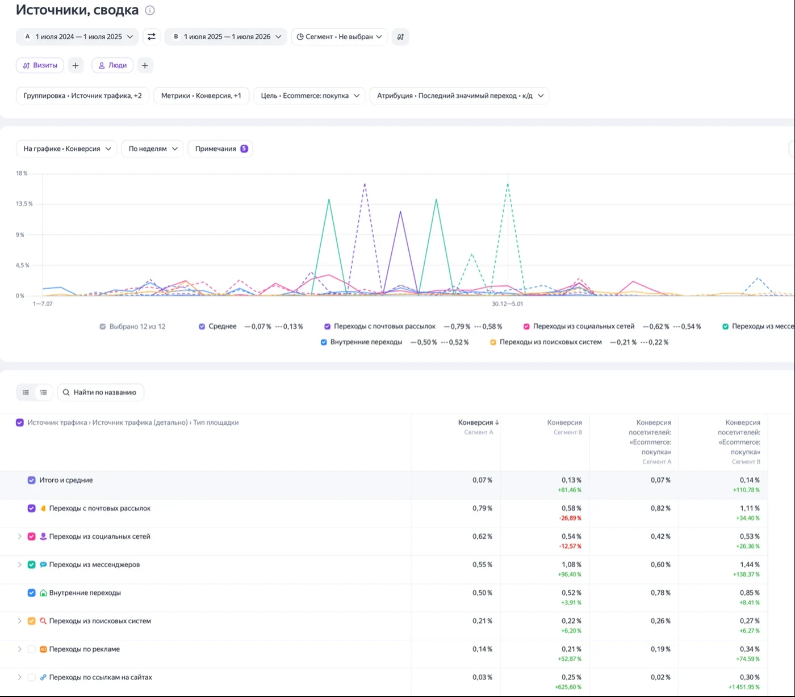

Рост конверсии интернет-магазина в 2 раза и розничных продаж на 22%
Задача. Повысить эффективность существующего трафика, конверсию и средний чек.
Моя роль. Руководство проектом от диагностики клиентского пути до внедрения и оценки результатов.
Решение. Провела анализ покупательского поведения, глубинные интервью и исследование клиентского пути. Определила точки потери покупателей, сформировала предложения по интерфейсу, позиционированию и контентной стратегии. Организовала внедрение изменений и проверку гипотез.
Конверсия посетителей в покупку выросла в 2 раза, розничные продажи на 22%, средний чек на 15%.
Ценность. Повышение эффективности существующей системы привлечения и продаж.
Конверсия: Яндекс Метрика, посетители, цель «покупка», июль 2025 — июль 2026 к июлю 2024 — июлю 2025. Продажи и средний чек: данные компании.
